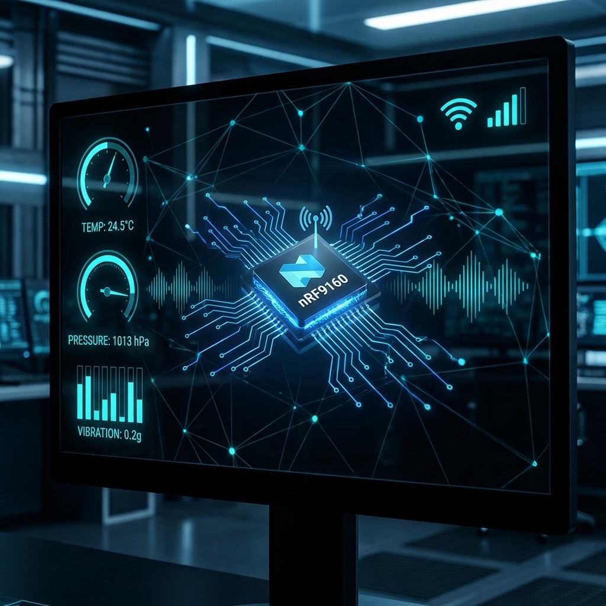
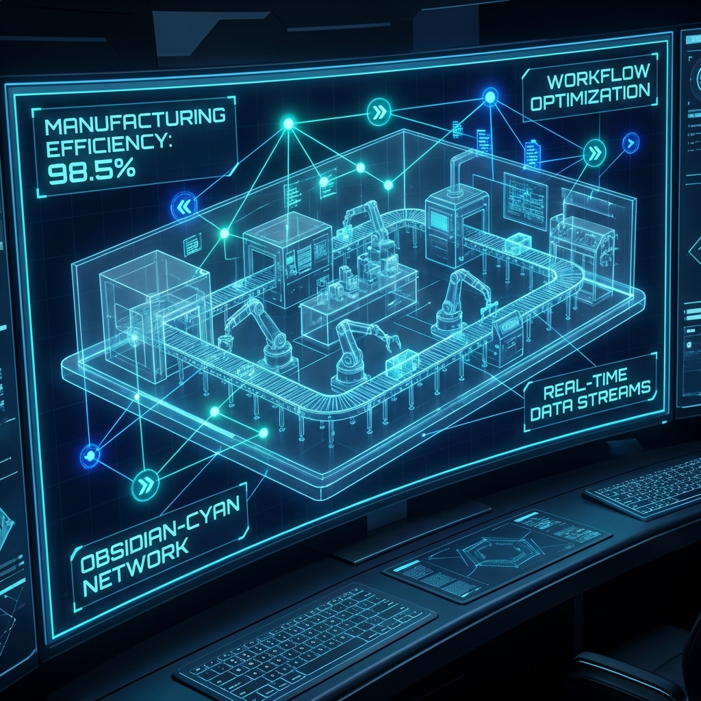

Embedded AI Specialist
Muhammad Shafqat Ashraf
Architecting the Bridge Between Silicon & Intelligence
Architecting mission-critical embedded systems at the intersection of firmware and artificial intelligence. Developing deterministic real-time architectures and deploying hardware-optimized TinyML models to transform raw signals into autonomous edge intelligence.
- AI Firmware Arsenal
- Deterministic RTOS
- TinyML Integration
To architect fault-tolerant, intelligence-driven systems that solve complex industrial challenges through hardware-software synergy and deterministic engineering.
Professional Service Offerings
High-performance engineering solutions tailored for developers, startups, and industrial clients.
Embedded Firmware Dev
Specialized firmware for microcontrollers (ARM, nRF, ESP) focused on real-time reliability and memory efficiency.
IoT & Cloud Ecosystems
End-to-end device connectivity and cloud integration using MQTT, NB-IoT, and AWS IoT Core.
Edge AI / ML Integration
Deploying TinyML models for on-device diagnostics, anomaly detection, and real-time signal analytics.
System Debugging & HW Bring-up
Logic-level hardware-software integration, circuit troubleshooting, and initial prototype validation.
Product Prototyping (MVP)
Rapidly taking hardware concepts from schematic to fully functional intelligent prototypes.
Optimization & Deployment
System-wide power optimization, stress-testing, and automated deployment support.
Hardware & Software Arsenal
Firmware Engineering
Low-level driver development (UART, SPI, I2C), memory optimization, and bootloader design for ARM Cortex-M and nRF series.
RTOS & Multitasking
Specializing in Zephyr RTOS and FreeRTOS for multi-threaded applications, ensures high reliability and real-time performance.
Industrial IoT
End-to-end IoT solutions using NB-IoT, LoRaWAN, and BLE. Secure cloud integration and OTA firmware updates.
AI & ML Integration
Developing data-driven models for predictive maintenance and health diagnostics using Python-based ML frameworks and time-series analysis.
Strategic Engineering Workflow
My systematic approach to transforming complex requirements into deterministic solutions.
System Analysis
Deep-dive into hardware constraints, power budgets, and mission-critical requirements to define the system's operational envelope.
Architecture Design
Designing robust, low-latency firmware blueprints and RTOS task structures using deterministic engineering principles.
Precision Development
Writing highly-optimized C++/Python code with a focus on memory safety, DMA efficiency, and real-time execution.
Validation & Optimization
Exhaustive system stress-testing and power profile optimization to ensure industrial-grade uptime.
Delivery & Support
Providing comprehensive technical documentation, deployment support, and long-term maintenance.
Mastered Ecosystem
My toolkit for architecting end-to-end intelligent systems.
Hardware
Firmware & RTOS
AI & Edge
Protocols
Strategic Industries
Specialized solutions for mission-critical sectors where precision and reliability are paramount.
Health & Medical
Intelligent wearables and diagnostic devices for real-time patient monitoring.
Industrial Automation
Predictive maintenance and remote telemetry for smart manufacturing lines.
Consumer IoT
Smart home connectivity and low-power business automation products.
R&D / Prototyping
Accelerated development for hardware startups and research laboratories.
Professional Profile
I operate at the specialized intersection of System Architecture and High-Performance Firmware. My approach goes beyond standard coding—I provide strategic technical leadership that helps businesses navigate the complexities of hardware selection, real-time multitasking, and Edge AI deployment.
Accelerated Time-to-Market
Implementing modular, reusable HAL and RTOS abstractions to shorten development cycles and ensure rapid product iteration.
Mission-Critical Reliability
Designing fault-tolerant watchdog systems and deterministic scheduling to eliminate downtime in industrial environments.
Business-Centric Edge AI
Optimizing existing hardware with quantized TinyML models, adding intelligent features without the need for expensive hardware upgrades.
3+
Years Strategic Exp.
50%
Cost Optimization Focus
Zero
Failure Tolerance
Work Experience
Embedded Firmware Engineer
Techanzy Limited - Lahore, Pakistan
- Developed and optimized embedded firmware in C/C++ for real-time microcontroller-based systems.
- Implemented RTOS-based applications using Zephyr, including task scheduling and inter-process communication.
- Developed and maintained low-level peripheral drivers (GPIO, UART, SPI, I2C, ADC).
- Debugged and validated firmware using hardware debuggers and laboratory instruments.
Process Engineer
Xiaomi Mi Technology - Lahore, Pakistan
- Coordinated cross-functional engineering teams to optimize manufacturing processes, technical workflows, and system efficiency.
- Performed system-level analysis and troubleshooting to identify bottlenecks and support continuous process optimization.
- Developed and maintained technical, process, and compliance documentation.
Electrical Engineer (Manufacturing Excellence)
Challenge Apparels Limited - Lahore, Pakistan
- Supported embedded hardware testing, PCB validation, and electronic system troubleshooting.
- Assisted in firmware bring-up activities and peripheral-level validation.
- Prepared technical documentation, feasibility notes, and system improvement reports.
Core Competencies
Electronics & Circuit Design
- PCB Layouts
- Schematic Design
- Troubleshooting
- nRF Microcontroller Integration
Embedded Systems & IoT
- Arduino, ESP8266, ESP32
- nRF52/nRF9160
- Raspberry Pi 4.0
- BLE, LoRa, NB-IoT
Programming & Tools
- C / C++
- Python / ML
- MATLAB
- Altium Designer / LTSpice
Systems & Operations
- Signal Processing
- Predictive Maintenance
- IoT Integration
- Wireless Protocols
Featured Case Study
Smart Foot Weight Analytics
System Workflow:
• Data Acquisition: High-density Piezoresistive sensor array captures
dynamic load.
• Analytics: Real-time extraction of CoP (Center of Pressure)
trajectories and load symmetry indices.
• ML Diagnosis: Neural network classification identifies
musculoskeletal abnormalities and early-stage neuropathy indicators.
• Output: Clinical-grade gait reports visualized via a secure Bluetooth
dashboard.
Featured Projects

Smart IoT Monitoring System
Low-power industrial telemetry via NB-IoT & Zephyr RTOS.

Embedded DSP Engine
Real-time vibration analysis and spectral filtering on STM32.

Cloud-Edge Manufacturing
Scalable industrial telemetry with edge-based anomaly detection.
Smart Foot Analytics
Diagnostic AI for gait analysis and musculoskeletal health.

The AEyes Assistive AI
Deploying conversational AI agents into physical hardware nodes.
Ready to Architect Your Next Solution?
I specialize in solving hard engineering problems. Whether you need a low-power firmware stack or an intelligent edge-AI node, I can help you build it.
Start Technical DiscussionEducation
Bachelor of Electrical Engineering
University of Engineering and Technology Lahore
2020 - 2024Intermediate (Pre-Engineering)
Punjab Daanish Boys School DG Khan
2018 - 2019Technical Certifications
- AI for Everyone (DeepLearning.AI)
- Embedded Systems Development (Zephyr/Nordic)
- Advanced PCB Design (Altium Academy)
- Industrial IoT Security Protocols
Language Proficiency
English
Professional Working ProficiencyUrdu
Native ProficiencyTechnical Project Inquiry
Have a complex engineering challenge? Let's discuss your system requirements and build a high-performance solution together.
Start a Partnership
I am currently available for new projects, freelance consultation, and long-term engineering contracts. Reach out to discuss your technical requirements.